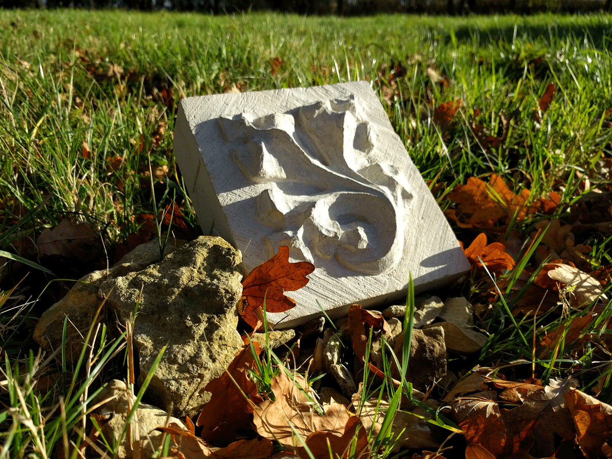
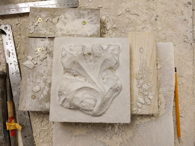
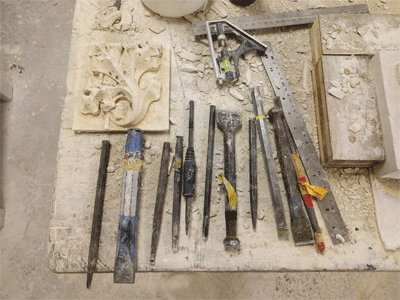
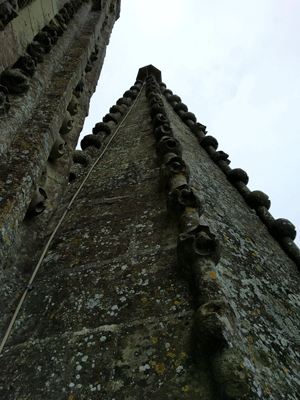
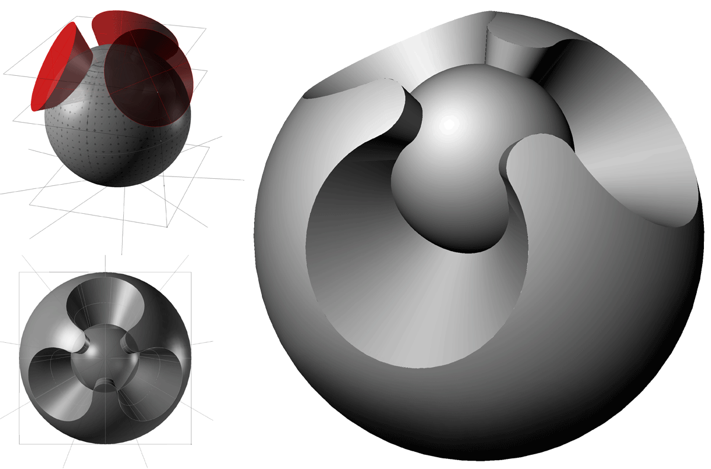
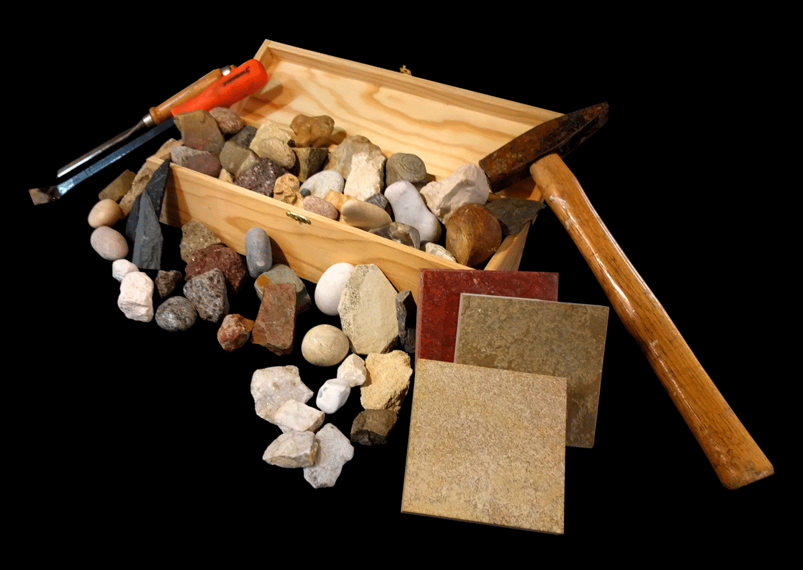

Gothic Leaf carving from block of Portland Limestone
Stones
Developing an understanding of the essential elements of construction, craft, and materiality.
In order to have a better knowledge to apply in architectural design, I am interested in learing more about the processes, skills, and raw materials that go into building. The subtleties of working with such a seemingly uniform and unyielding material as stone reveals much about its actual characteristics. Each type of stone has vastly different strengths, weaknesses, workability, structure, and other properties that must be understood and accounted for when designing and fabricating. If nothing else, I have gained and appreciation of the nearly infinite types of stone and their properties, including their beautiful visual qualities.

Process photographs of stone carving.


Design study of traditional English gothic ornament - based on details found on Salisbury Cathedral spires.

Stone Samples
Part of my personal stone sample collection from various travels. The incredible differences between stones of various regions is fascinating to observe. The material is inherent to the landscape and characteristics of the area in which they are found, and directly contribute to the unique built environment of each culture.